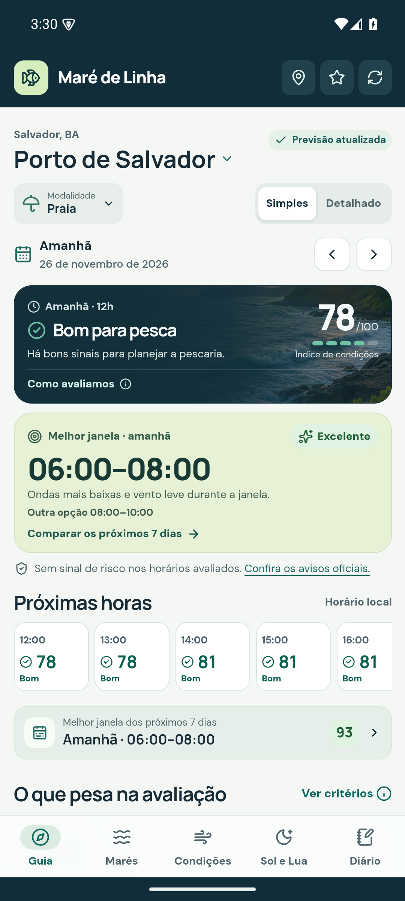

Encontre sua janela
Veja a melhor faixa do dia e compare até sete dias. Toque em um horário para entender o índice e abrir a previsão.
GUIA DE PESCA PARA ANDROID
Escolha seu ponto e sua modalidade. O Maré de Linha compara as próximas horas, explica as condições e indica as melhores janelas previstas.
Versão 2.0.0 · Gratuito · Android 7.0 ou superior

Compare horários, veja o que pesa na avaliação e confira os sinais de risco antes de sair.
Veja a melhor faixa do dia e compare até sete dias. Toque em um horário para entender o índice e abrir a previsão.
Praia, alto-mar, costão, rio, manguezal, estuário e embarcada. O peso de cada condição muda conforme a escolha.
O modo Simples resume maré, vento, chuva e ondas. Abra o Detalhado para ver gráficos, tabelas horárias e o calendário solunar.
O índice de 0 a 100 compara condições para planejar a saída. A nota exige dados suficientes e é suspensa nos horários com sinais de risco. Leia os critérios e as fontes ↗
Se você já usa a versão 1.0, instale a atualização por cima para manter seus favoritos e o diário.